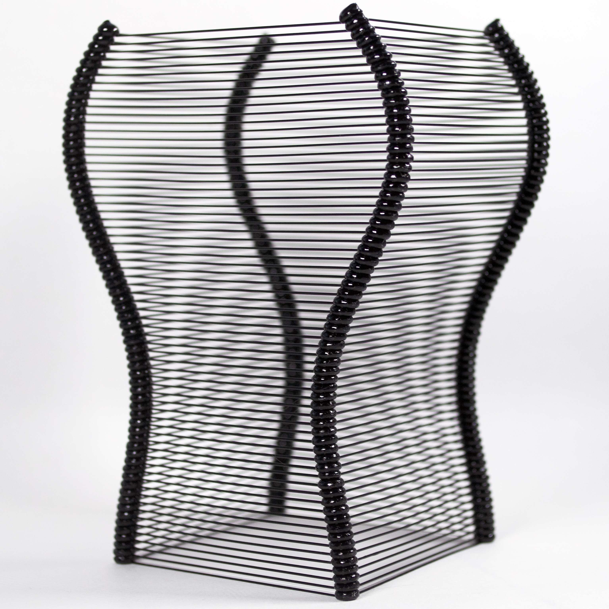

Welcome to the p5.fab Docs!
What is p5.fab? #
p5.fab is a Javscript library to control digital fabrication machines. It’s made for creative coders and makers across skill levels to make physical things using code. At it’s core, p5.fab lets you write Javascript code to control machines; it also supports interactive control of machines during execution and documentation of material output. You can use p5.fab to:
- make generative artifacts;
- explore and tune machine settings;
- quickly iterate on designs without reverting to CAD/CAM software;
- learn about how your machine works;
- experiment with new materials;
- develop interactive fabrication workflows;
- and whatever else you can think of!
p5.fab is developed as a library for p5.js. This site provides resources to use p5.fab.
Required Materials #
While you can use p5.fab without a machine, it is designed to be used to explore material behaviour. See the machine compatibility page for more info.
Getting Started #
- To set up p5.fab in a matter of minutes, check out Quickstart Guide.
- Head to the resources section for more in-depth guides.
- A list of p5.fab functions can be found in the reference.
- The source code can be found on github; feel free to ask questions and make suggestions/contributions there!